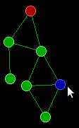

Adventi naptár
Czirkos Zoltán · 2019.02.27.
Fizikai motor – World of Goo, „A ragacsok világa”
Csábító lenne a mai alkalommal a tegnapi, biliárdos programot matematikailag továbbfejleszteni: az Euler integrátort lecserélni Runge–Kutta integrátorra… Azonban nem ez lesz a mai naptárbejegyzésben. Helyette World of Goo-vá alakítjuk át a programot.
Mit is csinált a tegnapi program? Golyók mozogtak benne a képernyőn, közben egymással és a fallal ütköztek. Minden időszeletben kiszámolta a program a golyókra ható erőket (amelyek ütközések által keletkeztek). Aztán azok alapján a gyorsulásokat, azokból pedig a sebességeket, amikből végül a helyzeteket:
Golyo g;
g.x += g.vx*delta_t;
g.y += g.vy*delta_t;
g.vx += (g.fx/m)*delta_t; /* ax*delta_t */
g.vy += (g.fy/m)*delta_t; /* ay*delta_t */A golyókra a következő erők hatottak:
- Ha a golyó falnak ütközött, akkor a fal eltaszította magától.
- Ha két golyó egymásnak ütközott, akkor azok is taszították egymást.
- Ha egy golyó gurult, akkor súrlódási erő hatott rá.
Leglényegesebb két golyó ütközése volt. Ezt egy rugóval modelleztük. Ha a két golyó középpontjának távolsága kisebb volt, mint a sugaraik összege, akkor összenyomódtak – és ilyenkor egy közéjük képzelt erős rugó taszította el őket egymástól:
/* golyók távolsága */
dx = x1 - x2;
dy = y1 - y2;
tav = sqrt(dx * dx + dy * dy);
/* rugóerő */
if (tav < 2 * golyo_r) {
l = 2 * golyo_r - tav;
f = golyo_d * l;
fx += dx / tav * f; /* egységvektor*f */
fy += dy / tav * f;
}Ezt a programot nagyon könnyen át tudjuk úgy alakítani, hogy a World of Goo-hoz hasonló játékot kapjunk. Először is, a zöld hátteret le kell cserélni feketére. :) Na jó, szóval a lényeg az, hogy két új erőt kell szimulálni:
- a gravitációt,
- rugókat is kell létrehozni a golyók között, amelyeknek az erejét figyelembe kell venni.
A letölthető program működése a következő:
- A tegnap bemutatott fizikai motorral szimulálja a golyók mozgását. A golyók ütközéskor taszítják egymást, és hat rájuk a gravitáció is.
- Az egérgombbal meg lehet fogni egy golyót (kék), aztán „fog és vidd” (drag and drop)
módszerrel áttenni máshova.
- Ha másik golyókhoz közel tesszük le, akkor a kellően közeli golyók és a letett golyók közé egy rugót hoz létre a program.
- Amikor megfogunk egy golyót, akkor viszont kitöröljük azokat a rugókat, amelyekkel eddig más golyókhoz volt kötve.
- A rugók hossza adott: erőt fejtenek ki akkor is, ha széthúzzuk, és akkor is,
ha összenyomjuk őket. Vagyis ezek sokkal inkább úgy működnek, mint az igazi
rugók, szemben a golyók ütközésekor közéjük képzelt fiktív rugókkal:
double f = rugo_d * (tav - rugohossz), /* erő */ fx = dx / tav * f, /* x és y komponensek */ fy = dy / tav * f; golyo[g1].fx -= fx; golyo[g1].fy -= fy; golyo[g2].fx += fx; golyo[g2].fy += fy; - Ha egy rugó túl hosszúra nyúlik (a természetes hosszának duplájára), akkor elszakad.
- Van a pályán fix golyó is (piros), amelynek nem változik a helyzete. Erre fel lehet lógatni az építményünket.
A golyókat a program egy tömbben tárolja (golyo[]), mivel azok száma
nem változik a futás során. Változik viszont a rugóknak a száma, ezért ahhoz egy láncolt
lista kell. Mivel gyakran kell beszúrni és törölni is a listába, egyszerűbb egy strázsás
listát választani. (Nagy úr a lustaság.) A rugókhoz elég csak két
tömbindexet eltárolni, hogy melyik két golyót kötik össze:
typedef struct Rugo {
int g1, g2; /* ket tombinex - mely golyokat koti ossze */
struct Rugo *prev, *next; /* duplan lancolt listahoz */
} Rugo;A játék futását alapvetően az idő vezérli, de a szimulációba be tudunk avatkozni az egérrel. Az egérgombnak nem az állapotát, hanem annak változását kell érzékelnünk:
- Ha előzőleg nem volt lenyomva a gomb, de az aktuális pillanatban igen, akkor egy kattintást érzékeltünk. Ilyenkor kell megkeresni az egérmutatóhoz közeli golyót, mert azt szeretné a játékos megfogni (drag).
- Ha előzőleg le volt nyomva, de most nincs, akkor ez egy elengedés. Ilyenkor szeretné a játékos letenni a golyót (drop).
Figyelni kell egyébként azért itt nem csak az állapotváltozásra, hanem az állapotra magára is. Ugyanis ha kattintáskor a játékos megfogott egy golyót, akkor az egérgomb nyomvatartásakor húzza azt. Ilyenkor a golyó koordinátáját folyamatosan módosítani kell az egérmutató koordinátája alapján.
Ezeket a műveleteket a programban az eseménykezelő ciklus vezérli.
Ez látja a golyók tömbjét (golyo, mérete golyok), a rugók
listáját, és a megfogott golyó indexét: megfogott.
Az utóbbi változhat, például kattintáskor a „nincs a kezünkben semmi” jelentésű
-1-es értéket leváltja egy golyo[] tömbbeli index:
case SDL_MOUSEBUTTONDOWN: /* egér kattintás */
mouse_x = ev.button.x;
mouse_y = ev.button.y;
for (int i = 0; i < golyok && megfogott == -1; ++i) {
double dx = golyo[i].x - mouse_x;
double dy = golyo[i].y - mouse_y;
if (dx * dx + dy * dy <= golyoelkap * golyoelkap) { /* ha elég közel volt az egérhez */
megfogott = i;
if (!golyo[i].fix) { /* ha nem fix, kiszakitjuk */
Rugo *iter = rugo.eleje->next;
while (iter != rugo.vege) {
Rugo *iternext = iter->next;
if (iter->g1 == i || iter->g2 == i)
rugolista_torol(iter);
iter = iternext;
}
}
}
}
break;Elengedéskor pedig az új rugók létrehozásán túl végül visszakerül a változóba
a -1:
case SDL_MOUSEBUTTONUP: /* egér elengedés */
mouse_x = ev.button.x;
mouse_y = ev.button.y;
for (int i = 0; i < golyok; ++i) {
if (i == megfogott) continue;
double dx = golyo[i].x - golyo[megfogott].x;
double dy = golyo[i].y - golyo[megfogott].y;
if (dx * dx + dy * dy <= rugoelkap * rugoelkap)
rugolista_hozzaad(&rugo, i, megfogott);
}
megfogott = -1;
break;Az egérgomb nyomvatartásakor a golyó cipelése egyszerű, egyszerűen kihagyjuk a mozgatásból:
for (int i = 0; i < golyok; i++) {
if (golyo[i].fix || i == megfogott) continue;
golyo[i].x += golyo[i].vx * delta_t;
golyo[i].y += golyo[i].vy * delta_t;
golyo[i].vx += golyo[i].fx / golyo_m * delta_t;
golyo[i].vy += golyo[i].fy / golyo_m * delta_t;
}Végülis ennyi az egész. Minden más szinte ugyanúgy van, mint a tegnapi programban. Még a súrlódás is. Valamilyen fékező erőnek kell lennie, amitől a rezgések csillapodnak. Bár elvileg súrlódás a levegőben nincs, csak más törvényszerűség szerint létrejövő közegellenállás, de a program az előbbivel számol.
A program letölthető innen: advent17-wog.c. Kicsit szépítgetni kellett, hogy beleférjen 300 sorba, de éppen belefér.